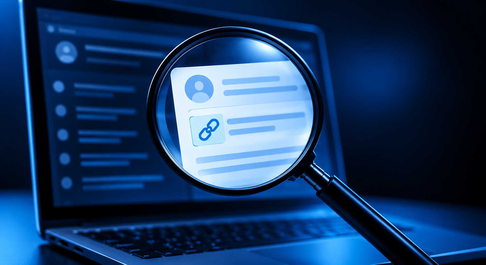
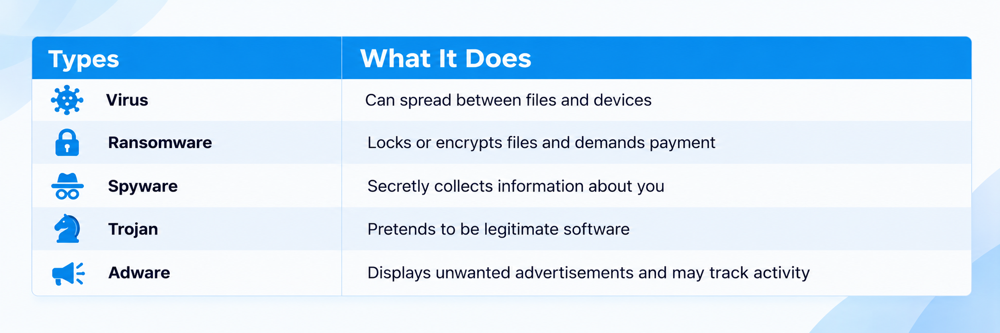
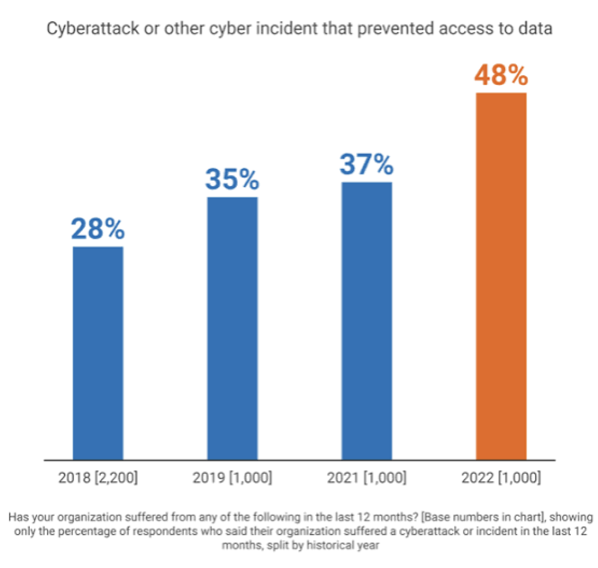

Common Threats
Know the Threats. Spot the Warning Signs.
Cybercriminals use many different techniques to target people online. Most attacks start with a simple interaction, such as opening a message, clicking a link, downloading a file, or sharing information. Learning what common threats look like can help you recognize them before they become a problem.
Phishing
What is Phishing?
Phishing is an attempt to trick you into revealing information or interacting with something malicious by pretending to be a legitimate person or organization.
Phishing can happen through email, text messages, social media, phone calls, and even fake websites.
What to Look for
- Unexpected messages or requests
- A strong sense of urgency
- Requests for passwords, payment, or verification
- Suspicious links or attachments
- Strange email addresses or website URLs
- Messages that are unusual or have errors
Example
"Your bank account has been temporarily locked. Click here within 24 hours to restore access."
Instead of clicking the link, visit your bank's official website or app directly.
Key Takeaway: A message looking legitimate doesn't mean it is legitimate.

Malware
What is Malware?
Malware is software designed to harm a device, steal information, or give someone unauthorized access. You may encounter malware through malicious downloads, email attachments, compromised websites, or fake applications.
Watch out for:
- Unexpected pop-ups
- Unfamiliar applications
- Slow device performance
- Files that suddenly become inaccessible
Device-specific protection tips can be found on the Device Security page.
Common Types

Account Takeovers
When Someone Gets Into Your Account
An account takeover occurs when an attacker gains unauthorized access to an online account. Attackers may obtain access through stolen credentials, phishing, data breaches, or social engineering.
Warning Signs
- Your password suddenly stops working
- Unexpected password-reset emails
- Login notifications you don't recognize
- Messages or posts you didn't create
- Unfamiliar purchases or account activity
- Changes to your account settings
Think Something Happened?
Visit the Been Hacked? page for steps to secure your accounts and recover from an attack.

Unsafe Websites & Online Scams
Not every website, advertisement, download, or online offer is what it appears to be. Scammers may create convincing websites that imitate banks, retailers, government agencies, or other trusted organizations.
Before You Interact
Check the URL
Look carefully for misspellings or unusual domains.
Question Unexpected Offers
If something seems too good to be true, investigate before providing information.
Don't Download Blindly
Only download software and files from sources you trust.
Be Careful With Personal Information
Think about whether a website actually needs the information it is requesting.
Know Before You Act
You don't have to figure everything out immediately. Cybersecurity isn't about recognizing every possible attack. It's about developing the habit of pausing when something seems unusual.
1. Stop
Don't click, respond, pay, or provide additional information.
2. Disconnect if Necessary
If you believe your device is actively compromised, disconnect it from the internet while you assess the situation.
3. Verify
Contact the organization or person involved through a trusted method.
4. Get Help
If you believe you've been hacked or your information has been stolen, visit the Been Hacked? page for next steps.